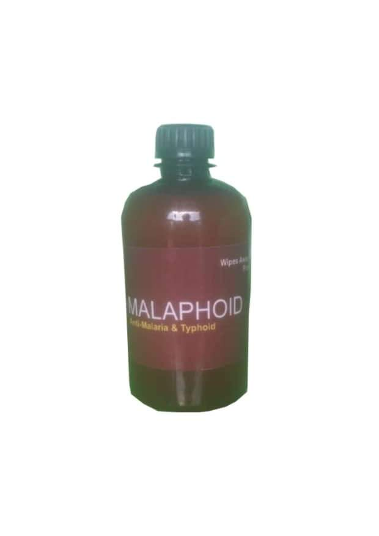

MALAPHOID
Number One Malaria and Typhoid Eraser
In tropical Africa today, malaria and Typhoid have developed stiff resistant to most of the orthodox medications in the market, hence the need for a paradigm shift in the status quo.
Among all the panoply of drugs in the market today, Malapoid wipes away even the most stubborn or resistant Malaria and Typhoid in just 3 days.
Malapoid goes into the arteries and bones and rids the whole body system of all malaria and typhoid parasites in just 3 days.
MALAPHOID is highly recommended for patients with AA GENOTYPE that are more prone to malaria and typhoid attacks
In addition, Malapoid kills minor germs and toilet infections in the body.
ADMINISTRATION & DOSAGE
Take 2 seamans schnapps shots 2 x 2 x 2 for 3 days.
Or 2 x 2 for 4 days.
Eastoncity, Test & Testify